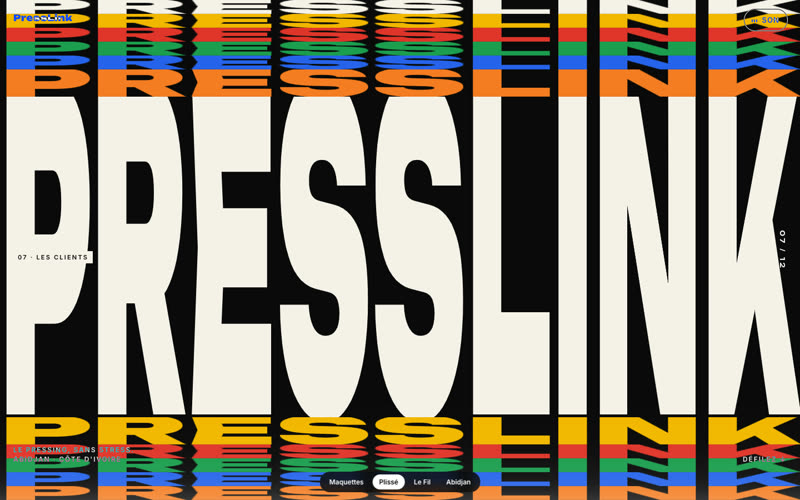
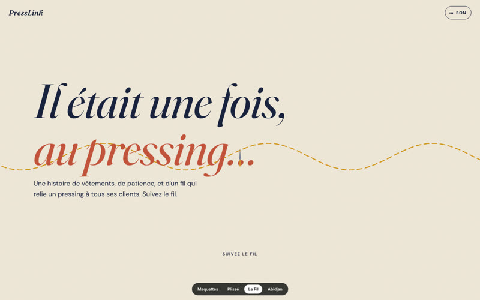
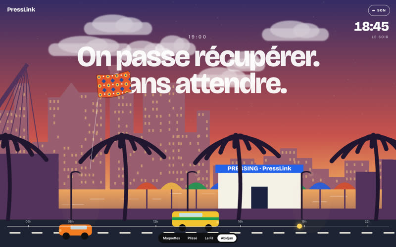

Site vitrine
en motion design
Trois maquettes à vivre, pas à lire : faites défiler, survolez, cliquez. Chaque direction raconte PressLink à sa manière. Les vidéos de présentation et de parcours auront leurs écrans dans le récit.

PlisséTypographie traitée comme du tissu : froissée puis repassée, un accordéon de rangées, des phrases que le fer remet en place, une étoffe qui se déplie.

Le FilUn conte cousu main : un fil suit votre souris, un nœud se dénoue, des fils qu'on pince comme une kora, un kente qui se tisse, un cintre.

AbidjanLe défilement fait passer une journée : le ciel change, la ville défile en profondeur, un pagne vole au vent, les étoiles dessinent le logo.
🔊 Activez le Son en haut à droite de chaque maquette : musique, ambiances, voix et bruitages. Sur ordinateur pour l'expérience complète, sur téléphone pour vérifier.